Presentation only: original sealed results and scores are unchanged. Revision provenance.
Ours: triangles/solid; Theirs: circles/dashed; analytic controls: squares/dash-dot. Thin curves and translucent low–high observed bands; bands are not confidence intervals. Missing evidence is NA, never zero. No universal ranking or published FNO superiority.
Computational completion, mathematical checks and scientific benefit are distinct. No model is selected by this report.
Compressed exact display data · Source hashes
| Stage | Status | Measured seconds | Failure |
|---|---|---|---|
| audit | VERIFIED | 0.4549063189770095 | |
| prepare | VERIFIED | 15.1050094080274 | |
| fit-discrete | VERIFIED | 1.5138687710277736 | |
| fit-continuum | VERIFIED | 3.7322850169730373 | |
| interactions-discrete-n16-overlapping_triads | VERIFIED | 1.633225291967392 | |
| interactions-continuum-n16-overlapping_triads | VERIFIED | 1.8603508030064404 | |
| memory | VERIFIED | 1.1258402870153077 | |
| fairness-discrete-000 | VERIFIED | 38.52980109502096 | |
| fairness-continuum-000 | VERIFIED | 61.004058766993694 | |
| kernels-discrete-n32 | VERIFIED | 2.065854599000886 | |
| kernels-continuum-n32 | VERIFIED | 8.488992114027496 |
fit-discrete: attribution only; coefficient magnitude has no higher-is-better meaning
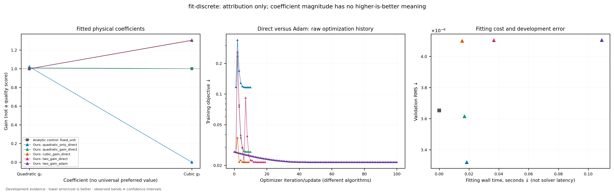
Vector PDF · Sources: fit-discrete/fit_results.json
fit-continuum: attribution only; coefficient magnitude has no higher-is-better meaning
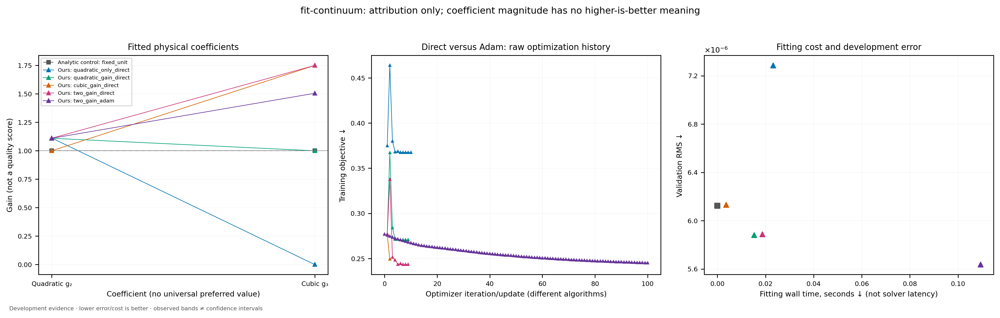
Vector PDF · Sources: fit-continuum/fit_results.json
discrete, 16²: independent diffusion/reaction sweeps; raw fields remain visible. Norms do not add: cross terms are in source data.
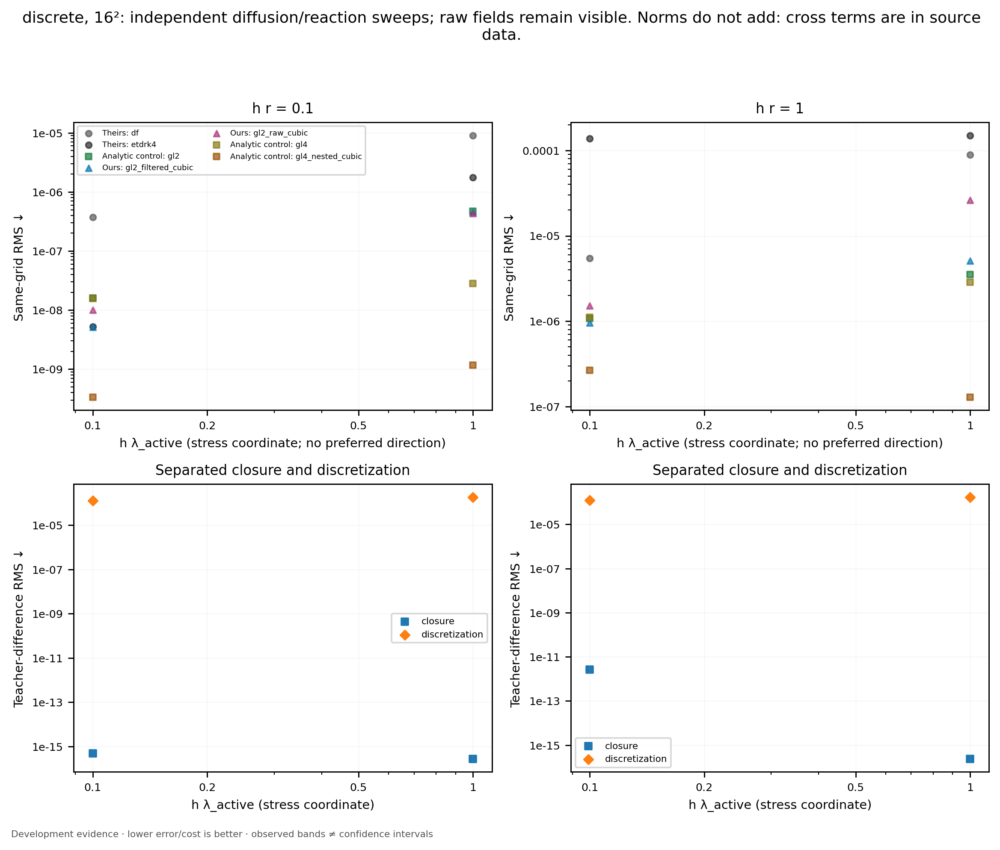
Vector PDF · Sources: interactions-discrete-n16-overlapping_triads/interaction_rows.json
continuum, 16²: independent diffusion/reaction sweeps; raw fields remain visible. Norms do not add: cross terms are in source data.
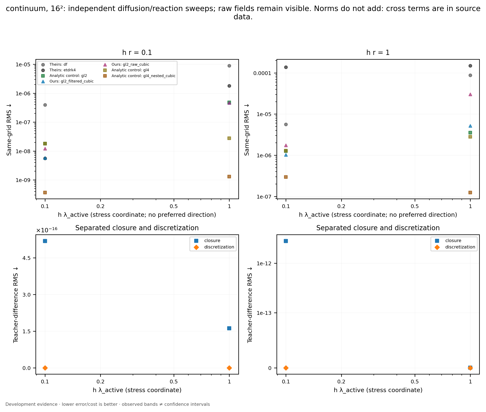
Vector PDF · Sources: interactions-continuum-n16-overlapping_triads/interaction_rows.json
Theirs: fno_scaled, discrete. Continuous translucent display ranges retain raw extrema; no smoothing enters scores.
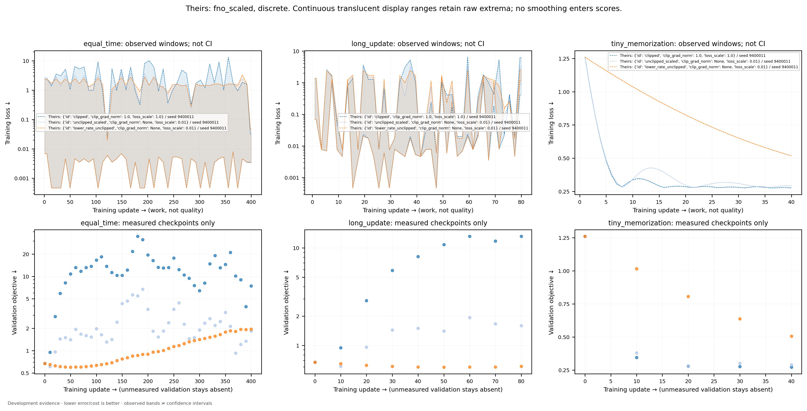
Vector PDF · Sources: fairness-discrete-000/learning_curves.json
Theirs: fno_mean, discrete. Continuous translucent display ranges retain raw extrema; no smoothing enters scores.
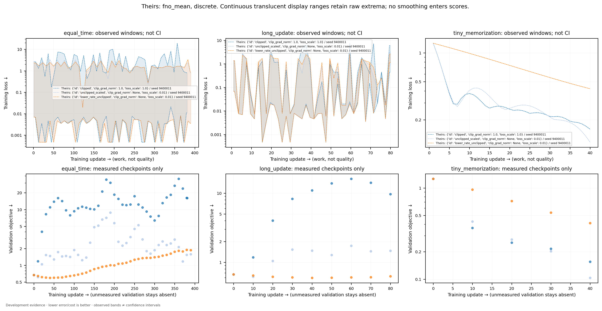
Vector PDF · Sources: fairness-discrete-000/learning_curves.json
Ours: two_basis, discrete. Continuous translucent display ranges retain raw extrema; no smoothing enters scores.
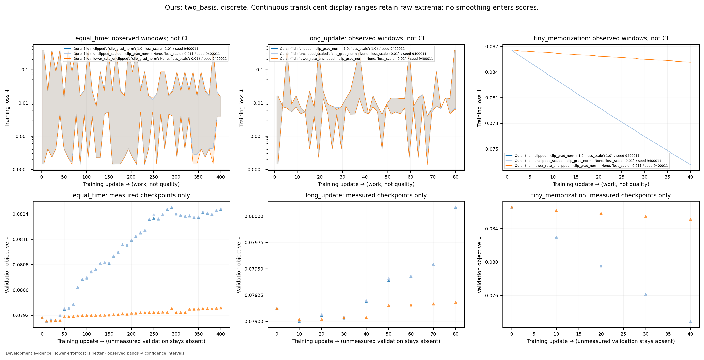
Vector PDF · Sources: fairness-discrete-000/learning_curves.json
Theirs: fno_scaled, continuum. Continuous translucent display ranges retain raw extrema; no smoothing enters scores.
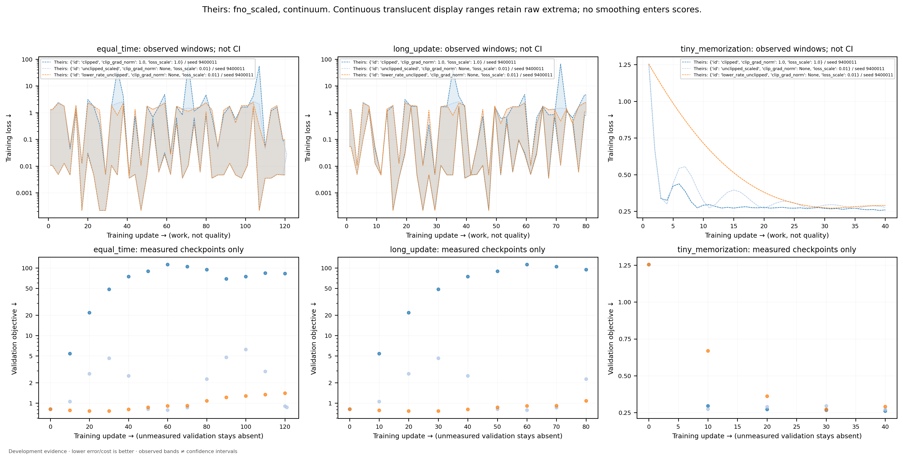
Vector PDF · Sources: fairness-continuum-000/learning_curves.json
Theirs: fno_mean, continuum. Continuous translucent display ranges retain raw extrema; no smoothing enters scores.
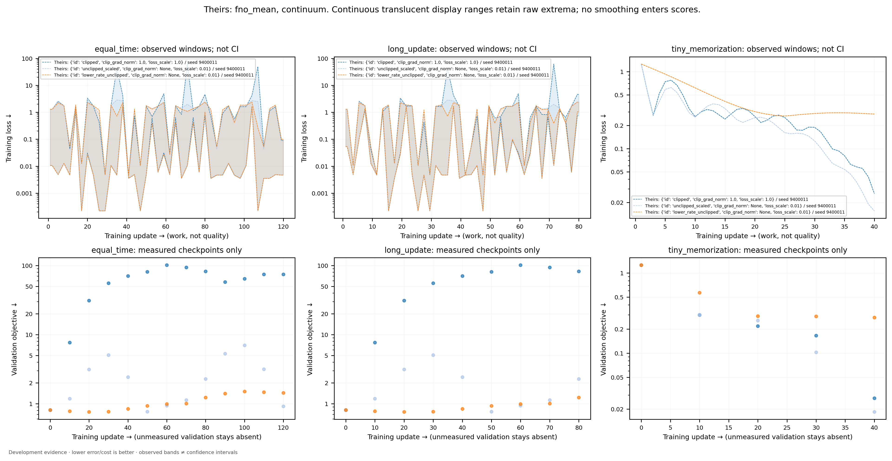
Vector PDF · Sources: fairness-continuum-000/learning_curves.json
Ours: two_basis, continuum. Continuous translucent display ranges retain raw extrema; no smoothing enters scores.
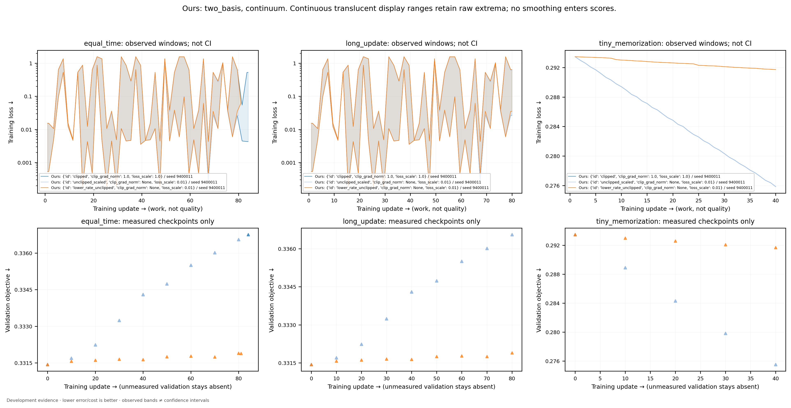
Vector PDF · Sources: fairness-continuum-000/learning_curves.json
kernels-discrete-n32: frozen development schedules; DF is an unfused implementation, not a strongest-classical cost frontier. Accuracy qualification remains in raw records.
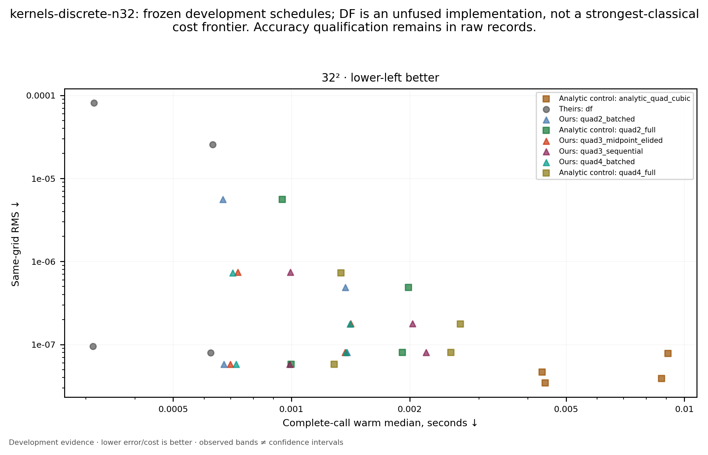
Vector PDF · Sources: kernels-discrete-n32/kernel_rows.json
kernels-continuum-n32: frozen development schedules; DF is an unfused implementation, not a strongest-classical cost frontier. Accuracy qualification remains in raw records.
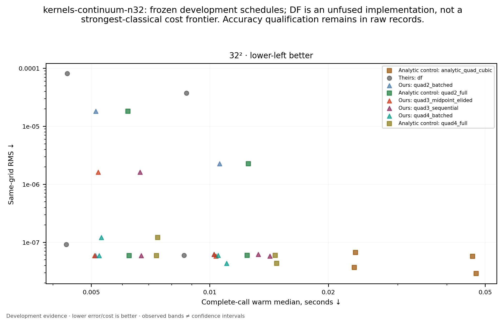
Vector PDF · Sources: kernels-continuum-n32/kernel_rows.json
kernels-discrete-n32: profiler counts include scalar products and checks; instrumentation time is not solver latency.
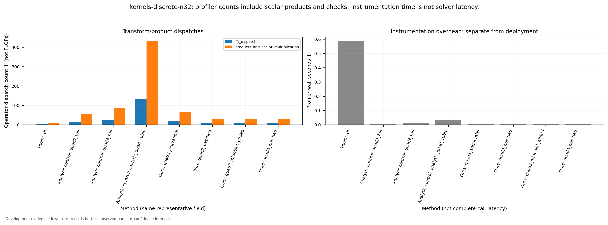
Vector PDF · Sources: kernels-discrete-n32/profiling.json
kernels-continuum-n32: profiler counts include scalar products and checks; instrumentation time is not solver latency.
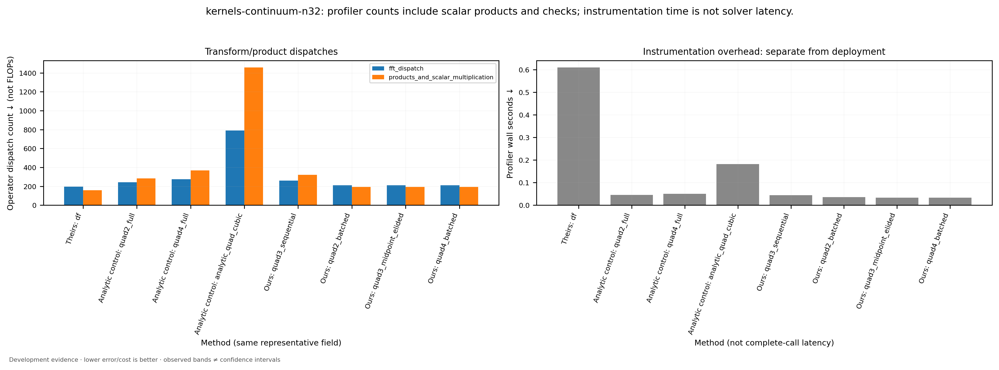
Vector PDF · Sources: kernels-continuum-n32/profiling.json
RX: fresh development parents, paired noise. Median and full observed range; no future teacher refresh.
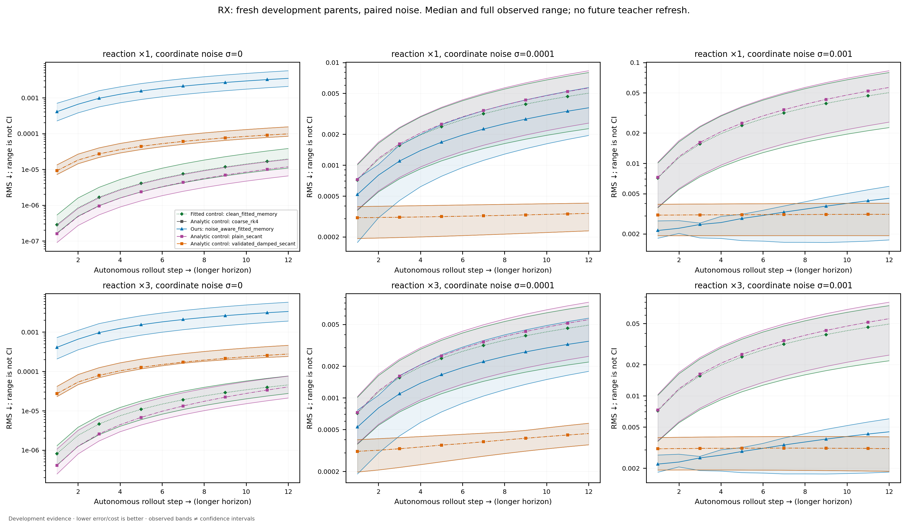
Vector PDF · Sources: memory/memory_results.json
Measured wall costs include failed attempts when supplied. Report/queue/accounting, power and dollar costs remain separate or unavailable.
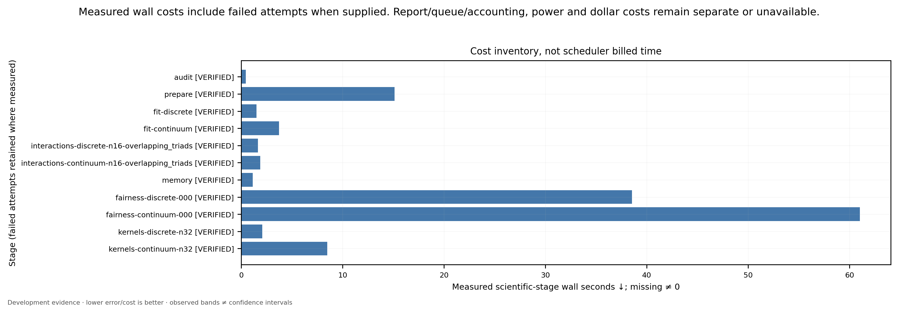
Vector PDF · Sources: audit/summary.json, fairness-continuum-000/summary.json, fairness-discrete-000/summary.json, fit-continuum/summary.json, fit-discrete/summary.json, interactions-continuum-n16-overlapping_triads/summary.json, interactions-discrete-n16-overlapping_triads/summary.json, kernels-continuum-n32/summary.json, kernels-discrete-n32/summary.json, memory/summary.json, prepare/summary.json